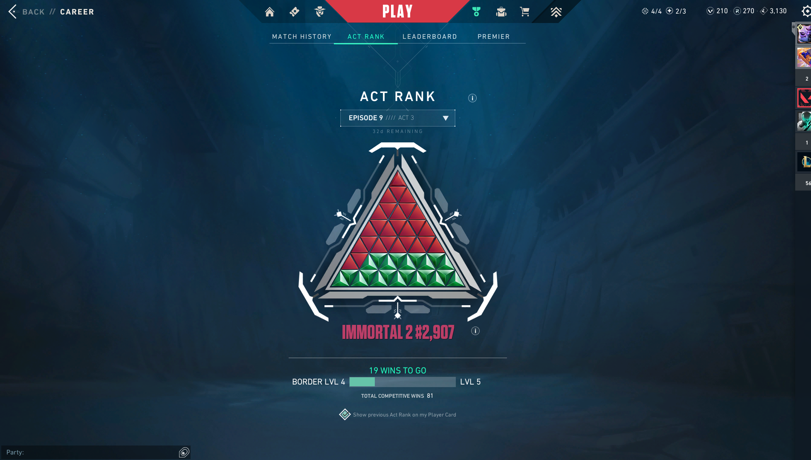
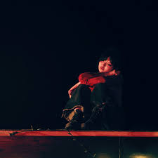

about me (an assortment of my various interests)
i like playing valorant, i peaked immortal 2 but currently sit around ascendant
i currently play counter-strike 2 for ucsd gold
i am a fan of lyn lapid (stream buzzkill)
other artists i enjoy often include but are not limited to: mili, sabrina carpenter, red velvet, jane remover, beabadoobee, faye webster, chappell roan, the marias, clairo, kanye west, olivia rodrigo, laufey, tennis
i sometimes play minesweeper and have a 64 second expert time

i have a projecteuler account and solve problems there sometimes, usually with python